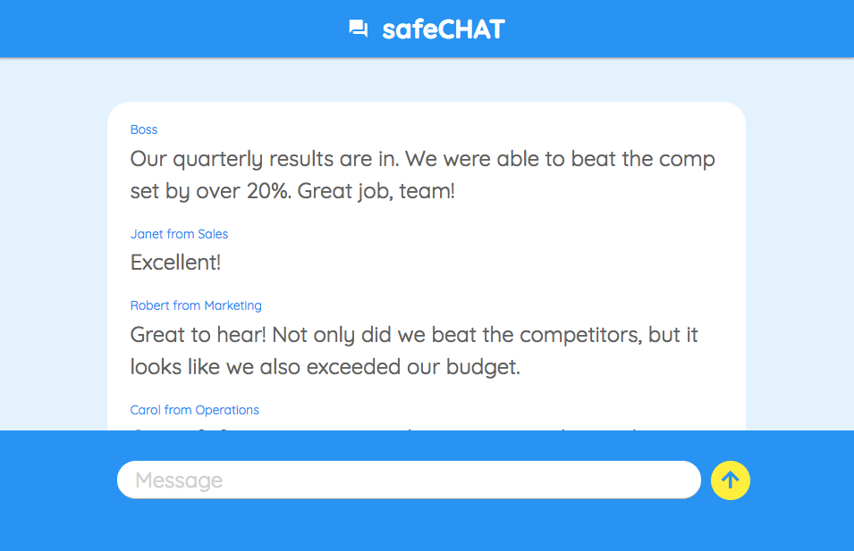
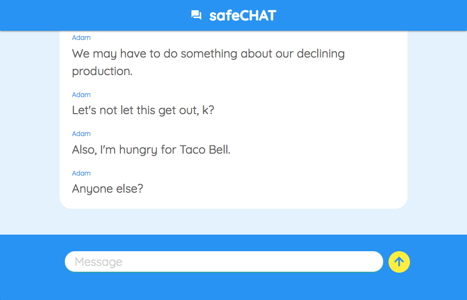

SafeChatOnline.com

The user chooses a name. If they do not choose one, they are assigned a random animal.

The chat area defaults to a decoy text that looks much like ordinary conversation.

Toggling the text view with the 'esc' key to show the real conversation.
LabLocator

The user enters their starting location and a prefered radius for the search.

Lab Locator offers a list of all labs that offer blood work in their network within the chosen radius.

There is an admin login for adding/deleting labs from batabase or for editing information of existing labs. This page previously employed firebase authentication, but I am currently looking for more interesting log-in options.